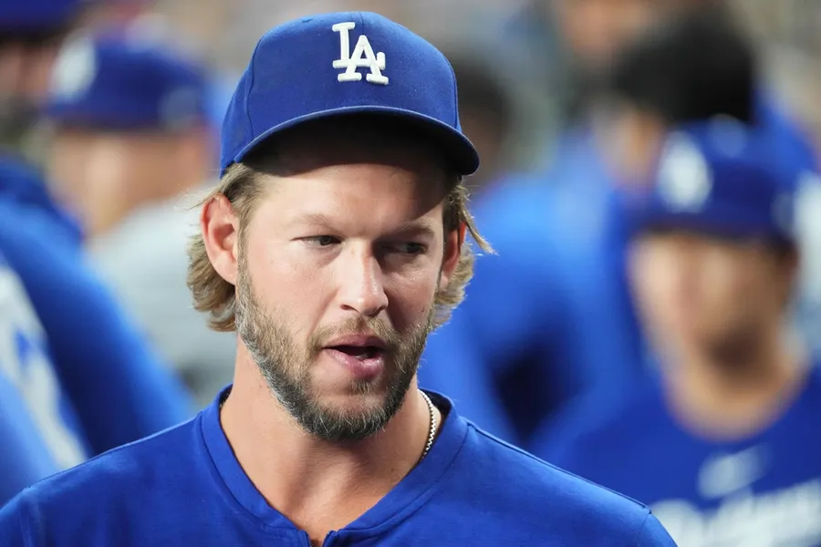

Welcome to my Sports blog
Welcome to Our Sports Blog!
Our sports blog is dedicated to providing you with the latest and most exciting articles in the world of sports. Whether you’re a casual fan or a passionate sports enthusiast, you’ll find something that suits your interests. We offer a wide range of articles covering the latest sports news, in-depth analyses, and exclusive features about athletes and teams.
The blog is designed with easy navigation in mind. At the top of the page, you’ll find a navigation menu with links to different sections of the site:
• About Us: Learn more about the team behind the blog and our mission to deliver high-quality sports content.
• Contact Us: Get in touch with us for any inquiries, suggestions, or feedback. We always love hearing from our readers.
• Articles: A comprehensive list of all our posts, including the latest sports news and popular articles.
• Article Details: Each article has its own dedicated page where you can read the full content, view images, and leave comments.
• Photo Gallery: Browse through our collection of sports photos, featuring top highlights, athlete portraits, and event snapshots.
We update our blog regularly to ensure you’re always up to date with the most relevant sports topics. We hope you enjoy reading and exploring the world of sports with us!
Blog Posts

Free agent Clayton Kershaw vows to 'crush' post-op rehab
Date: Thu 7th November, 16:18 Author:Field Level Media Category:Professional sports content for digital and print audiences. News. Event Coverage. Analysis. Scalable Custom Solutions.
Future Hall of Fame pitcher Clayton Kershaw confirmed he underwent foot and knee surgeries on Thursday and will begin rehabilitation with the intention of returning for an 18th season in 2025.read more...
MLB Offseason Transactions We Need To See Happen This Winter
Date:Wed 6th November, 09:36Aouthor:Jerry BeachCategory: Professional sports content for digital and print audiences. News. Event Coverage. Analysis. Scalable Custom Solutions.
TOct 3, 2024; Milwaukee, Wisconsin, USA; New York Mets first baseman Pete Alonso (20) celebrates with teammates after hitting a three run home run against the Milwaukee Brewers in the ninth inning during game three of the Wildcard round for the 2024 MLB Playoffs at American Family Field. Mandatory Credit: Benny Sieu-Imagn Images. read more...
Braves’ Ronald Acuna, Spencer Strider unlikely to be ready for '25 Opening Day
Date: Wed 6th November, 15:32Author:Field Level Media Category:Professional sports content for digital and print audiences. News. Event Coverage. Analysis. Scalable Custom Solutions.
Jun 11, 2022; Atlanta, Georgia, USA; Atlanta Braves starting pitcher Spencer Strider (65) and right fielder Ronald Acuna Jr. (13) celebrate after a victory against the Pittsburgh Pirates at Truist Park. Mandatory Credit: Brett Davis-Imagn Imagesread more...
Mets LHP Sean Manaea declines $13.5M option for 2025
Date: Sun 3rd November, 17:13Aouthor:Jerry BeachCategory: Professional sports content for digital and print audiences. News. Event Coverage. Analysis. Scalable Custom Solutions.
Oct 20, 2024; Los Angeles, California, USA; New York Mets pitcher Sean Manaea (59) pitches against the Los Angeles Dodgers in the second inning during game six of the NLCS for the 2024 MLB playoffs at Dodger Stadium. Mandatory Credit: Jayne Kamin-Oncea-Imagn Images. read more...
Free agent Clayton Kershaw vows to 'crush' post-op rehab
Aug 31, 2024; Phoenix, Arizona, USA; Los Angeles Dodgers pitcher Clayton Kershaw (22) looks on against the Arizona Diamondbacks during the third inning at Chase Field. Mandatory Credit: Joe Camporeale-Imagn Images
Future Hall of Fame pitcher Clayton Kershaw confirmed he underwent foot and knee surgeries on Thursday and will begin rehabilitation with the intention of returning for an 18th season in 2025.
The surgery to his left foot was performed by Dr. Kenneth Jung, while noted surgeon Dr. Neal ElAttrache repaired the meniscus in his left knee."Thank you Dr ElAttrache and Dr Jung for fixing them! Planning to crush some rehab and be good as can be come next year," Kershaw posted to Instagram on Thursday. "Thanks for all the prayers and support! World Series champs!"
Kershaw, 36, was limited to seven games in 2024 coming off left shoulder surgery in the offseason.
He made his season debut on July 25 and pitched 30 innings before reporting damage to his toe, which turned out to be a ruptured plantar plate and arthritis in his left foot.
The three-time NL Cy Young Award winner and 2014 NL MVP didn't pitch in the postseason. He has been a mainstay in the Dodgers' rotation, spending his entire MLB career in Los Angeles.
Kershaw pitched on one-year contracts in 2022 and 2023 before signing an incentive-laden $5 million deal for 2024 that included a 2025 option for $10 million. With incentives, he earned $7.5 million in 2024.
He declined the 2025 option but it is expected he and the Dodgers will renegotiate another incentive-based deal for the season since he declared himself a "Dodger for life" at the World Series championship parade. As a free agent, he currently isn't on the 40-man roster, and that gives the Dodgers some roster flexibility to work with over the winter.
Field Level Media
Field Level Media is a passionate writer
Conversation
MLB Offseason Transactions We Need To See Happen This Winter
While free agency officially began last Thursday at midnight, just a few minutes after the Los Angeles Dodgers closed out the New York Yankees in Game 5 of the World Series, the Hot Stove season didn’t really begin until Monday. That’s when baseball’s general managers gathered for their annual meetings in San Antonio—and, as of 5 PM EST, when free agents could officially begin signing with teams other than their 2024 employer.
The big dominoes won’t begin falling for weeks, if not months (thank you very much, Scott Boras). But with the general managers all gathered in one place and the landscape becoming clearer for free agents, there should be some movement sooner than later. Here are three transactions we’d like to see transpire, in reverse order of the impact they’d have on baseball’s offseasonagainst the Washington Nationals during the sixth inning at Citi Field. Mandatory Credit: Brad Penner-Imagn Images
This feels like one of those teenage relationships where both sides know how good they are together but still find themselves wondering what life would be like with someone else. In the parlance of those times, Alonso and the Mets are now “seeing” other people but haven’t officially yet broken up. (Hold on, going to go listen to some early ‘90s hits for no apparent reason.)
Alonso, whose 226 regular season homers leave him just 26 behind Darryl Strawberry for the all-time franchise lead, appeared on his way out when he set full-season career lows with 34 homers and 88 RBIs. But he changed the narrative in the playoffs by hitting four homers—including the season-saving ninth-inning blast against the Milwaukee Brewers in Game 3 of a wild card series—while posting a .999 OPS. And even before his big October hits, Alonso—blessedly lacking anything resembling a poker face—made no secret how much he loves New York and playing for the Mets.
David Stearns is the classic emotionless modern executive who has brought his fiscally conscious ways from Milwaukee to New York. The wild card may be owner Steve Cohen, who has been hands-off but is also a Mets fan who knows what Alonso and the franchise mean to each other and has the money to overpay for a guy who may someday have his number retired by the team.
Don’t make this the end of the road, guys. Pete, you’ll never get over the Mets getting over you and vice versa. Neither one of you really wants to listen to “Release Me” on an endless loop. Reunite and remain together forever (wrong decade, not a ballad, but the right sentiment).
Jerry Beach
Jerry Beachis a passionate writer
Conversation
Braves’ Ronald Acuna, Spencer Strider unlikely to be ready for '25 Opening Day
Jun 11, 2022; Atlanta, Georgia, USA; Atlanta Braves starting pitcher Spencer Strider (65) and right fielder Ronald Acuna Jr. (13) celebrate after a victory against the Pittsburgh Pirates at Truist Park. Mandatory Credit: Brett Davis-Imagn Images
Atlanta Braves stars Ronald Acuna Jr. and right-hander Spencer Strider are unlikely to be medically cleared before Opening Day 2025.
Braves general manager Alex Anthopoulos told reporters Tuesday that Opening Day is not "realistic" for either player. Both continue to rehab from season-ending surgeries in 2024.Acuna, 26, tore his ACL on May 26 and Strider underwent elbow surgery a month before after just two starts in the 2024 season.
The Braves start the 2025 regular season with a series against the San Diego Padres on March 27.
"With both guys, I don't think it's significant time, but I think we're confident that Opening Day is not realistic for them," Anthopoulos told reporters at the general managers meetings. "I think, look, once we get to spring, you get to the beginning of February, you'll have a much better idea on timelines. We're planning that they will not be part of the Opening Day roster, and how soon after that, we'll know more as we get deeper into the offseason."
Acuna was batting .250 with four home runs in just 49 games before his knee injury. He was coming off his MVP season in 2023, when he hit .337 with 41 home runs and 73 stolen bases.
Strider, 26, was coming off an All-Star season in 2023, when he went 20-5 with a 3.86 ERA.
Field Level Media
Field Level Media is a passionate writer
Conversation
Mets LHP Sean Manaea declines $13.5M option for 2025
Oct 20, 2024; Los Angeles, California, USA; New York Mets pitcher Sean Manaea (59) pitches against the Los Angeles Dodgers in the second inning during game six of the NLCS for the 2024 MLB playoffs at Dodger Stadium. Mandatory Credit: Jayne Kamin-Oncea-Imagn Images
New York Mets left-hander Sean Manaea declined his $13.5 million option for 2025, according to multiple reports on Sunday.
Opting out of the final season of a two-year, $28 million deal will make Manaea a free agent.Manaea, 32, went 12-6 with a 3.47 ERA in 32 regular-season starts before going 2-1 with a 4.74 ERA in four postseason starts. It was his first season with the Mets.
Manaea professed interest in returning to New York next season after the Mets were eliminated by the Los Angeles Dodgers in the National League Championship Series.
Manaea is 77-62 with a 4.00 ERA in 228 appearances (198 starts) with the Oakland Athletics (2016-21), the San Diego Padres (2022), the San Francisco Giants (2023) and Mets.
Jerry Beach
Jerry Beachis a passionate writer
Conversation